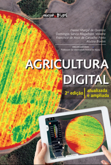
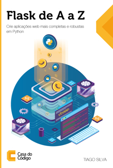
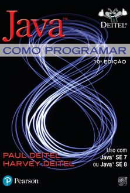
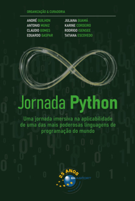
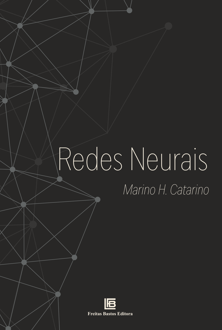

Transforme sua jornada acadêmica com a
Biblioteca Digital Unitec.
SOBRE A NOSSA BIBLIOTECA
A **Biblioteca da Unitec** é um centro de apoio fundamental para a comunidade acadêmica. Nosso objetivo é oferecer um ambiente de estudo ideal e um acervo diversificado para auxiliar no desenvolvimento de pesquisa, estudos e conhecimento. Disponibilizamos um amplo catálogo de livros, periódicos, e-books e acesso a bases de dados científicas e multidisciplinares.

Oferecemos espaços de estudo individual e em grupo, computadores com acesso à internet e salas de apoio. Além disso, nossa equipe está sempre pronta para ajudar na busca por materiais, orientar pesquisas e esclarecer dúvidas sobre os recursos disponíveis. Visite-nos e aproveite tudo que a biblioteca tem a oferecer para sua jornada acadêmica.


NOSSOS LIVROS
Agricultura digital
A Agricultura Digital, ou Agricultura 4.0, representa uma grande revolução verde, com profundas mudanças na organização da produção e uso eficiente dos recursos naturais e insumos, por meio de inovações como automação e robótica; sensores que monitoram o solo, a planta e o clima; processamento e armazenagem dos dados em nuvem e inteligência artificial.
Estrutura de dados
Este livro discute os conceitos mais relevantes do estudo sobre estruturas de dados. Retrata, dessa forma, análises de algoritmos, recursividade, possibilidades para a realização de ordenação e os diferentes modos de busca. Trabalha ainda definições de estruturas de dados como as do tipo grafo, meios de representação e o algoritmo de Dijkstra, também esclarecendo sobre funções hash e tabela hashing.
Flask de A a Z:
Flask é um dos melhores frameworks para se trabalhar no Python atualmente. Por ser uma ferramenta robusta e completa, ela permite que a aplicação Web seja construída de forma a atender às necessidades de seu usuário final, ao mesmo tempo em que flexibiliza o fluxo de desenvolvimento de uma equipe. Flask interage de forma excelente com SQLAlchemy, uma biblioteca ORM muito interessante e
Java: como programar
Milhões de alunos e profissionais aprenderam programação e desenvolvimento de software com os livros Deitel. Java: como programar, 10ª edição, fornece uma introdução clara, simples, envolvente e divertida à programação Java com ênfase inicial em objetos. Destaques incluem rica
Jornada Python:
Este livro é a obra definitiva para quem deseja dominar uma das linguagens de programação mais versáteis e poderosas do mundo. Você será guiado em uma viagem chamada “Jornada Python”, iniciando com os fundamentos da linguagem, passando por orientação a objetos, boas práticas de programação e chegando a alg
Redes neurais
O interesse em tecnologia tem se disseminado ao longo do tempo devido à sua praticidade e possibilidades de uso. Dentre todas as soluções existentes, as redes neurais se destacam por sua ampla aplicação, o que tem causado uma revolução na sociedade, alterando a forma como enxergamos os dados e imagens.
AS UNIDADES

Unidade Taboão da Serra
Endereço: Rua João Baptista de Oliveira, 169 - Taboão da Serra, SP.
Nesta unidade você encontra a biblioteca principal, salas de aula equipadas,
laboratórios de
informática, e uma ampla área de convivência para seus estudos.

Unidade Taboão da Serra - II
Endereço: Avenida José Dini, 15 - Taboão da Serra, SP.
Focada em inovação e tecnologia, esta unidade abriga cursos de ponta e laboratórios
especializados, promovendo um ambiente de aprendizado dinâmico e focado no futuro.

Unidade EAD
Com cursos de Graduação e Pós-Graduação 100% online, nossa unidade EAD oferece a flexibilidade que você precisa para estudar de qualquer lugar. Acesse a biblioteca digital e todo o conteúdo do curso na plataforma virtual de aprendizagem.